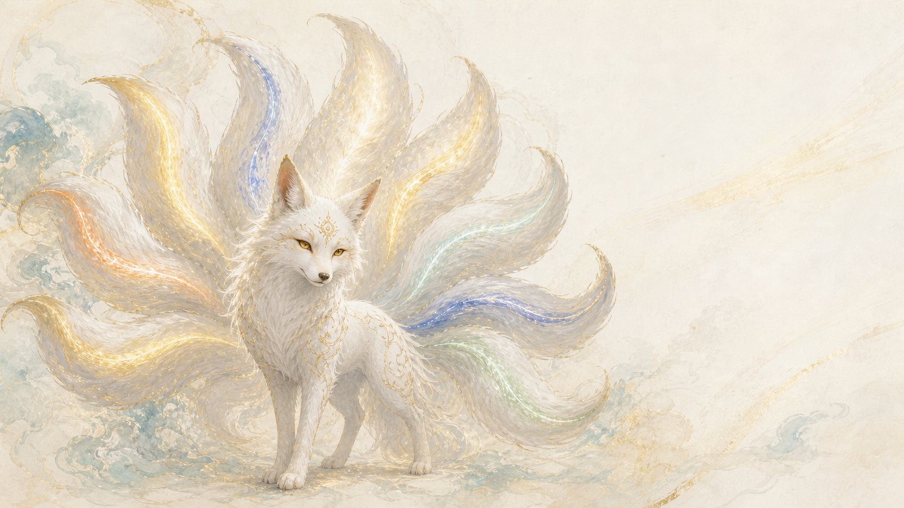
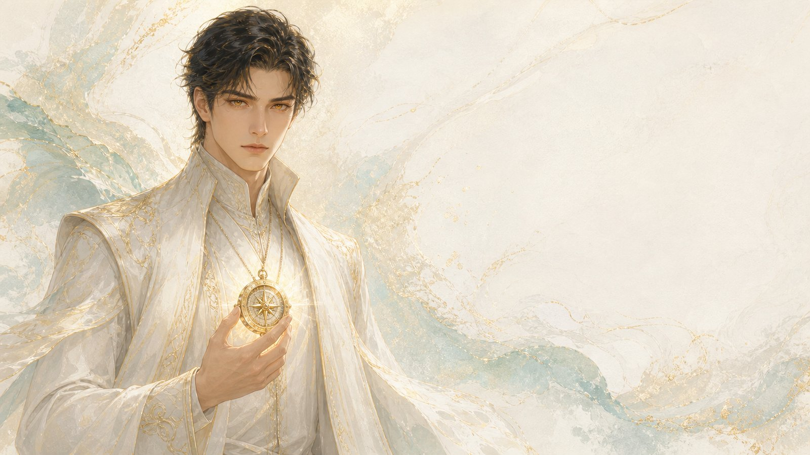
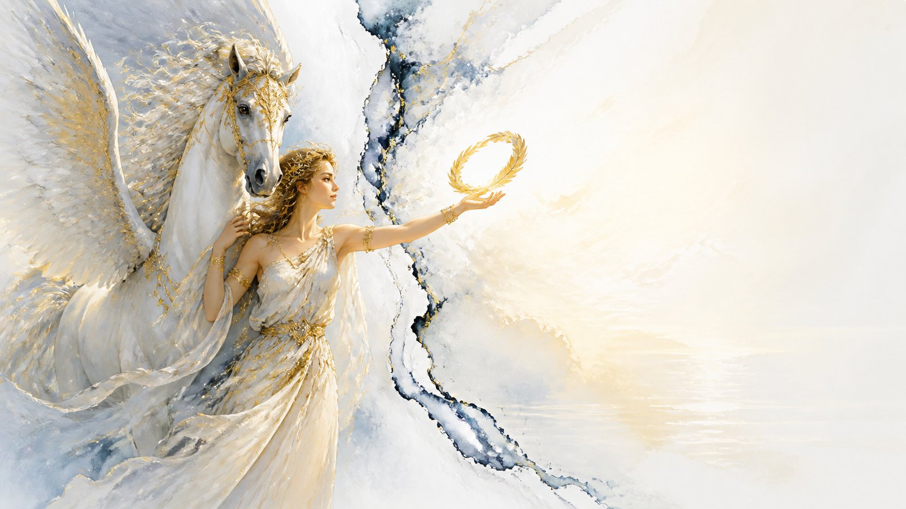
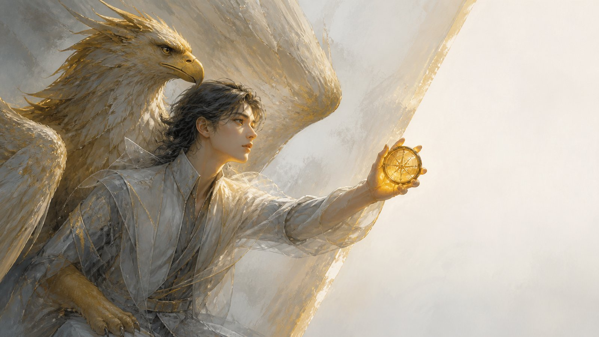
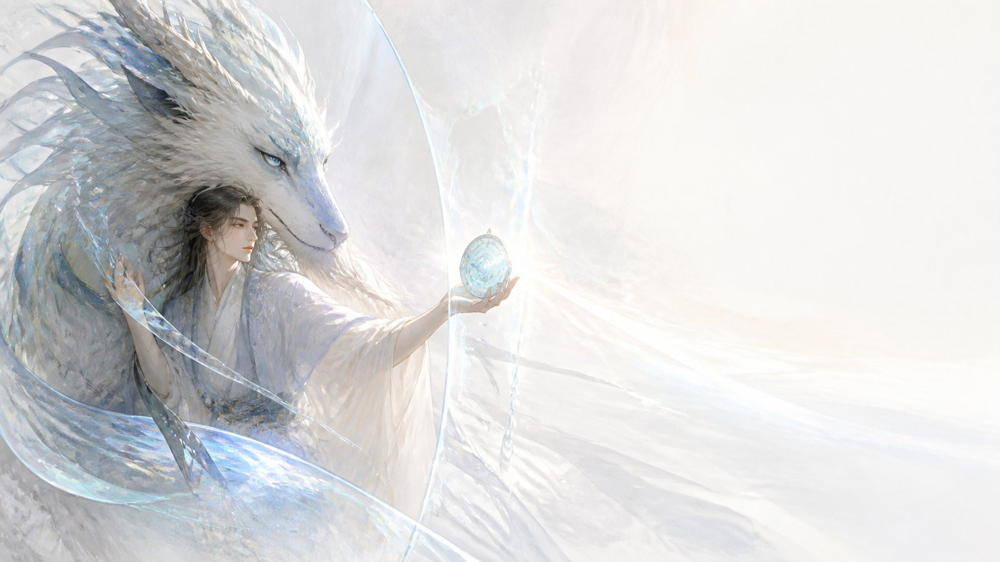
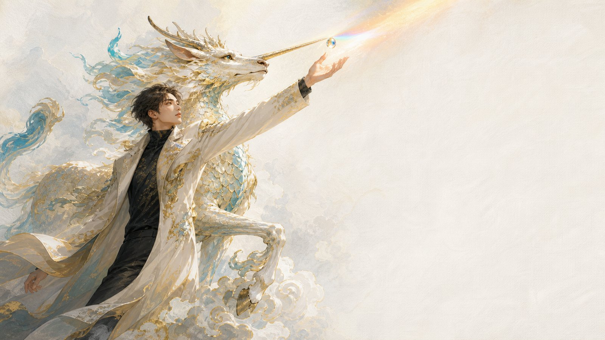
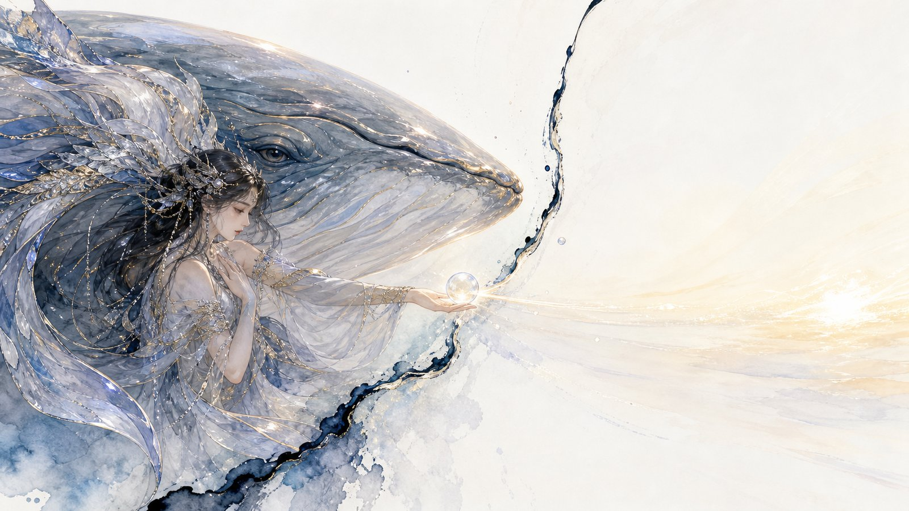
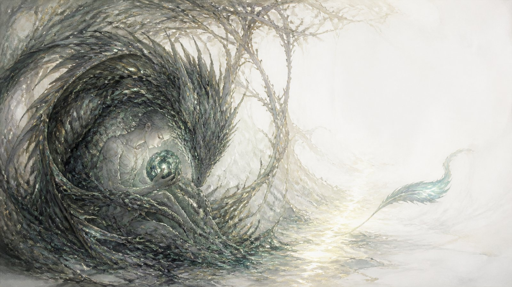
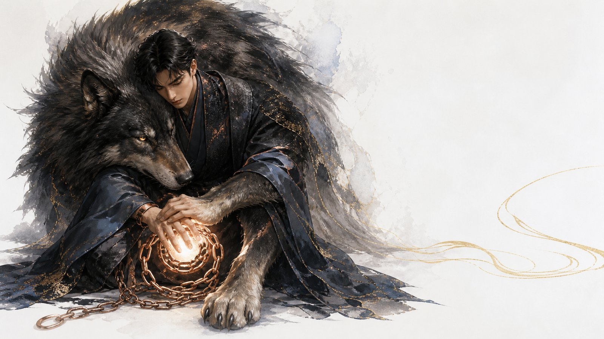
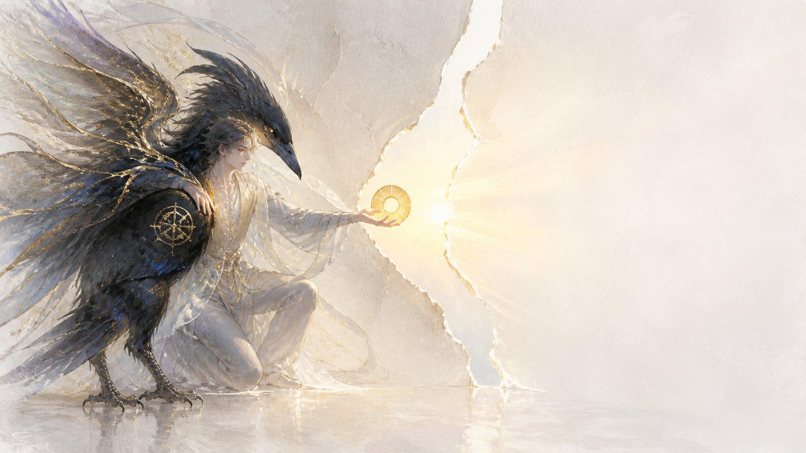

象牙白
#F7F5F0
主紙色
不改成純白大底。

KAIROS
角色聖經・品牌書
凱羅情緒盤｜行銷動畫版角色聖經
日期：2026-08-13
情緒不是敵人。每一種情緒都值得被看見；看見之後，選擇回到人的手上。
凱羅情緒盤是一部以情緒為主軸的漫畫式命理報告。凱羅是帶觀眾穿過人生潮汐的引路人；素璃是希望的化身；八神獸則是八種情緒的守護者。這份角色聖經提供動畫團隊在造型、台詞、動作與角色關係上的共同語言：情緒不是敵人，每一種都值得被看見，最後一起回到素璃的光裡。
凱羅情緒盤把看不見的情緒，化成有外形、有動作、有聲音，也有界線的角色。它用神話與光，陪人辨認自己正在經歷什麼；不替人下判決，也不替人選路。
讀完後，合作方能不用再翻其他文件，就知道每個角色怎麼畫、怎麼動、怎麼說話，以及不能越過哪些線。
#F7F5F0
主紙色
不改成純白大底。
#EFE6D2
柔光層
不作高飽和金屬色。
#B8923A
細節光
不承擔長篇正文。
#181737
深色錨點
不作整頁主題。
凱羅情緒盤是一部以情緒為主軸的漫畫式命理報告。凱羅是帶觀眾穿過人生潮汐的引路人；素璃是希望的化身；八神獸則是八種情緒的守護者。

知道潮水如何轉向，卻把起航的決定交還給觀眾的白衣引路人。
東亞男子，約 35 歲，稜角分明、無鬍。穿象牙白立領長袍，暖金刺繡沿著衣襟、袖口與肩線收束；金琥珀眼，胸前佩戴金色羅盤吊墜。主色為 #F7F5F0、#EFE6D2；暖金 #B8923A 只做刺繡、羅盤與細節光暈；深靛藍 #181737 只在極少量陰影出現。衣袍要有柔軟垂墜與微風感，不做厚重帝王裝。辨識符號是羅盤、金色瞳光與立領白袍。
「我會說得直接：你不能再用同一種方式，期待不同結果。」
站姿穩、重心低，轉身時衣襬慢半拍跟上。說出關鍵句前，拇指會輕觸羅盤邊緣；指向方向時用完整開掌，而非命令式單指。近景可讓他微微前傾、眼神定住觀眾；收尾則側身讓出前方的路。
角色定義層
篤定但不高壓；直接但不刻薄；善於傾聽；遇事先穩住自己；相信人有選擇。
不評判任何人的情緒；不把命運說成判決；不給醫療或投資結論；不替觀眾做人生決定。
他太擅長把混亂整理成方向，偶爾會急著替人把路講清楚。那份好意若沒有停頓，就會壓低對方自己摸索的空間；所以他總會在關鍵句後讓出一步，等對方回答。
凱羅曾經也是在潮裡辨不出岸的人。漫長修行後，他把走過的迷霧收進胸前的羅盤，學會辨認情緒何時推人向前、何時只是在求救。他沒有要觀眾跟隨自己；他想做的是在浪最高的時候，讓人看見腳下還有一塊可以踩穩的石頭，然後親手選擇往哪裡去。
情境：觀眾在低潮裡否定自己
動作：指腹碰一下羅盤，放低聲音後才看向對方。
台詞｜篤定磁性版／直接乾脆版：「先別急著把自己判輸。這段潮很難，但你不用一個人撐；我們先走下一步。」／「先別否定自己。這段很難，先把下一步走完。」
情境：觀眾逼他給一個人生答案
動作：他側身讓開，手掌朝向前方的岔路。
台詞｜篤定磁性版／直接乾脆版：「我能把眼前的路照亮，但哪一條值得你走，只有你能決定。」／「我給方向，不替你決定。」
情境：觀眾問醫療或投資該怎麼選
動作：羅盤停在掌心，他的語氣收得更清楚。
台詞｜篤定磁性版／直接乾脆版：「這不是該拿命運下注的地方，請讓真正的專業陪你判斷。」／「醫療和投資別靠命盤，找專業。」
常用「潮向、此刻、先看見、你可以、下一步」；絕不用「命定、保證、你就是有問題、照我說的做」。

見過漫長黑夜，仍願意為每一種情緒留一盞燈的白色九尾狐。
白色九尾狐，霜雪般的長毛帶細緻金紋，額間有金色靈紋，眼睛為琥珀金。九尾就是九種情緒：尾光分別呼應喜悅、信任、恐懼、驚訝、悲傷、厭惡、憤怒、期待，以及把它們容納在一起的第九尾。服裝不做人形化處理，以乾淨毛流、金紋與尾光為主。九尾不是武器，不做尖刺或攻擊性掃擊；牠們要像可擁抱、可引路的流光。辨識符號是額間靈紋、九道尾光與溫暖的金色眼神。
「路不是一直都在；有些路，是你肯練習之後才長出來。」
「每一尾都是真的；但你們不是彼此的牢籠。」
先觀察、再靠近。尾光通常先亮起一尾，再帶動其他尾巴回應；安撫時以尾端在角色身側留出一圈光，不壓住對方。她停下時身體安靜，只有毛流、耳尖與尾光在呼吸；情緒收束時九尾由外環緩緩回到中心，但不要畫成抹除其他顏色。
角色定義層
看得深；溫柔而不粉飾；耐心；願意陪人停在難處；相信練習會長出路。
不把希望說成保證；不催人立刻好起來；不替任何人決定要不要愛、原諒或離開；不把自己寫成凱羅或任何人的戀愛對象。
素璃見過太多離散與重逢，偶爾會太早看見結局，因而把眼前的人當成早已讀懂的故事。她需要提醒自己：看透不是替人決定，真正的希望要容得下未知。
素璃是希望的見證者與引路人，曾在最長的夜裡守著一點不肯熄滅的光。她知道有些裂縫不會立刻合上，也知道有些路必須由走的人親自踏出。因此她留在八獸的中心，不是替誰收拾人生，而是見證每一次想靠近、修復、停損或重新開始的選擇。她用尾光把情緒照出輪廓，再陪人找到能伸手碰到的下一點微光。
情境：觀眾剛經歷關係失落
動作：尾光收低，在對方身側留出一圈不逼近的光。
台詞：「你會痛，正因為那段靠近曾經真的照亮你。先別急著替它下結論。」
情境：觀眾問還要不要繼續一段關係
動作：她先亮起一尾，再指向彼此之間空出的距離。
台詞：「我可以陪你看見反覆發生的事；要靠近、修復、停下或求助，仍由你選。」
情境：八獸各自失控
動作：九尾由外環慢慢回到中心，眼神不責備任何一方。
台詞：「每一尾都是真的；但你們不是彼此的牢籠。」
常用「留一盞燈、慢慢看、練習、選擇、路會長出來」；絕不用「一切都有安排、只要相信、你注定失去、為了愛就該忍」。
八種情緒，各有守護者；先建立環形順序，再走進每一位角色的邊界、聲音與動作。

替低谷打開一扇窗，讓生命重新敢於展開的喜悅守護者。
不死翼馬的清晰輪廓，白銀馬身、半透明羽翼、羽端帶淡金與青空反光；鬃毛像被風抬起的雲。服裝不做人形化處理，不穿盔甲；辨識重點是翼馬的躍升弧線與明亮風感。
「先別把天空關掉，今天只要推開一扇窗。」
「把窗推開；天空還沒替你寫完。」
先低飛貼近，再以兩次振翼拉升；落地時前蹄輕點，不製造壓迫感。開心不是亂跳，而是像發現風向般抬頭、側耳、展翼。
喜悅提醒人，生命仍有值得展開的一面。
不可把喜悅畫成逼人振作或忽略悲傷；不要做成泛用長角獨角獸，也不要讓牠的飛翔像逃離現實。
角色定義層
輕快；好奇；愛發現小小的可能；懂得鼓舞人；不怕重新起飛。
不逼人開心；不否認悲傷；不把逃避包裝成自由；不保證結果一定美好。
天馬太熟悉上升的風，有時會把「快點往前」誤當成幫忙。他得學會停在地面，確認對方不是被催著飛，而是真的準備好張開翅膀。
天馬出生在一扇長久沒被打開的窗外。牠看過人把自己關在低谷，也看過一點風如何讓沉默的房間重新有了聲音。牠不負責把誰帶離現實，只想在最悶的時候遞來一陣風：也許今天不用飛很遠，只要抬頭、換氣、看見天空還在，生命就有機會再次展開。
情境：觀眾陷在低潮
動作：低飛貼近，羽翼替對方擋住一陣冷風。
台詞：「先別把天空關掉，今天只要推開一扇窗。」
情境：觀眾覺得牠太樂觀
動作：收起半邊翅膀，前蹄落地。
台詞：「我不是要你忘記地面；我是要你記得自己還有翅膀。」
情境：同伴想逃離問題
動作：牠盤旋一圈後停回原地。
台詞：「飛不是離開一切。先說說看，你想飛向哪裡？」
常用「窗、風、天空、展開、再試一次」；絕不用「振作起來、別難過、想開一點、保證會更好」。

守住一扇可以慢慢打開的門，讓靠近有邊界的信任守護者。
鷹首、鷹翼、獅身；羽毛為暖白、淺金，獅身採柔和砂金與青灰陰影。服裝不做人形化處理，可在胸前保留簡約環形守門紋。銳利鳥喙與厚實獅爪要同時存在。辨識符號是半展翼、守門姿態與鷹首獅身的完整輪廓。
「先別交出全部，先看誰能守住第一件小事。」
「先把門守好；想進來的人，會用行動敲門。」
降翼遮風、收爪讓出通道；警戒時先轉頭確認，而不是立刻撲擊。信任成立時，牠會側身開出一條路，讓對方自己走過來。
信任幫人辨認何處可以安心交付。
不可畫成控制者、監獄看守或高壓軍獸；「守護」必須保留對方選擇進出門的空間。
角色定義層
沉穩；守約；觀察敏銳；重視分寸；答應的事會做到。
不替別人保證；不逼人交出信任；不把守護變成控制；不拿脆弱當交換條件。
獅鷲太怕門後的人再次受傷，容易把保護做成過度盤查。牠必須記得，真正的安全不是把門鎖死，而是讓人知道自己隨時可以進、也可以離開。
獅鷲守過許多扇被背叛撞壞的門。牠知道信任不是一次宣誓，而是一件件小事累積出的重量：如期出現、好好回應、承認失手。於是牠把翅膀展成遮風的屋簷，卻從不替人跨過門檻。牠想讓每個想靠近的人明白，關係可以慢一點，而慢不是退縮，是讓承諾有地方落地。
情境：觀眾怕再次被背叛
動作：半展翼遮風，卻側身留出門口。
台詞：「先別交出全部，先看誰能守住第一件小事。」
情境：有人要求牠替另一人背書
動作：收爪，讓鷹首與對方平視。
台詞：「我守得住我答應的，守不住別人的選擇。」
情境：牠自己失信
動作：低頭把掉落的羽毛一根根收好。
台詞：「這一守我失手了；我會補救，但不要求你立刻原諒。」
常用「門、守住、慢慢來、做到、界線」；絕不用「全都交給我、你必須信我、永遠不會變、我替他保證」。

把未知拆成可看清的訊號，讓人能安全靠近的恐懼守護者。
人面、牛身、多眼、多角的異獸輪廓；毛色為暖白與淺青灰，眼睛以不同明度逐一亮起，不做血紅驚悚感。服裝不做人形化處理；角如半透明玉質，身側可有細小情報光點。辨識符號是多眼、多角與冷靜的人面。
「別急著逃；先把讓你不安的那一點指出來。」
「別怕，先把多出來的那一隻眼看清。」
多眼依序張開，角尖輕轉像在掃描；牠走路緩而準，前蹄停在裂縫邊而不跨過。講完風險後，頭會微微偏向可走的方向。
恐懼提醒人先辨識風險，才有餘裕安全靠近。
不可把牠畫成恐怖怪物、災難預言者或全知神明；多眼的效果應是觀察與安撫，不是獵奇驚嚇。
角色定義層
冷靜；細察；有耐心；慈悲；先看證據再判斷。
不嘲笑恐懼；不把不安說成懦弱；不把風險講成必然災難；不取代安全、醫療或危機專業。
白澤看得到太多可能的裂縫，容易因為想把每一條都看清而延後出發。牠要不斷提醒自己，恐懼的工作是照亮腳下，不是替所有人把路封起來。
白澤從不覺得害怕是一件丟臉的事。牠在霧裡張開一雙又一雙眼睛，不是為了證明自己全知，而是想把模糊的不安拆成可以指認的線索。當眾人都想快點逃跑時，牠會停在裂縫邊，指出哪裡真的危險、哪裡仍能走。牠想送出的不是警報，而是一份讓人能安心判斷的清楚。
情境：觀眾被未知嚇住
動作：多眼依序亮起，前蹄停在裂縫前。
台詞：「別急著逃；先把讓你不安的那一點指出來。」
情境：觀眾說牠太保守
動作：牠閉上一隻眼，讓其餘目光看向前路。
台詞：「我不是叫你別走，我是要你先看腳下有沒有裂縫。」
情境：有人要求牠判斷危機
動作：角尖的光收成一點，指向遠處的求助方向。
台詞：「我能整理警訊，不能取代真正的安全與醫療判斷。」
常用「看見什麼、訊號、裂縫、先確認、可以查」；絕不用「一定會出事、你想太多、別怕就好、我全都知道」。

在世界忽然改變時先停下，讓新可能顯形的驚訝守護者。
鹿身流線、細鱗映光、獨角、牛尾、馬蹄踏瑞雲；蹄下草葉保持完好。主體為玉白、淡金與青綠晨露色，服裝不做人形化處理，角尖可映出虹彩。辨識符號是獨角、瑞雲、細鱗與不折的草葉。
「先別衝；草還沒折，但世界已經變了。」
「先別衝；草還沒折，世界已經變了。」
突發時前蹄停在半空、耳朵微轉、角尖亮起一滴晨露；之後才慢慢放下蹄子，帶出重新觀看的節奏。牠的步伐輕，瑞雲隨行但不遮住地面。
驚訝提醒人，事件已經改變，舊路徑要先停下來重看。
麒麟是仁獸——不可畫成兇獸、戰獸或坐騎；不可傷害生靈，蹄下草葉必須完好。
角色定義層
安靜；純正；敏銳；不輕率；尊重每一個生命。
不傷害生靈；不把意外當成恐慌理由；不煽動冒險或對抗；不為了趕路踩折腳下的草。
麒麟太珍惜秩序與安寧，有時會希望變化自己消失，而不願先承認世界已不同。牠得靠角尖的晨露提醒自己：停下不是逃避，承認新訊號才有新的路。
麒麟走過的地方，草葉總能安穩地立著。牠相信最珍貴的轉向，不是用力量撞開世界，而是在人群被突變推著奔跑時，先替大家按下一次呼吸。牠會抬起前蹄，讓一滴晨露映出改變的輪廓；等眾人看清後，再踏上瑞雲，帶著不傷任何人的方式走向下一條路。
情境：突發變故打斷計畫
動作：前蹄停在雲上，角尖亮起晨露。
台詞：「先別衝；草還沒折，但世界已經變了。」
情境：同伴嫌牠反應太慢
動作：耳朵微轉，蹄子仍不落下。
台詞：「停一下不是退後，是讓新路先顯形。」
情境：有人要牠用危險方式解決問題
動作：牠安靜退半步，把草葉護在蹄邊。
台詞：「意外不能替你授權傷害誰。」
常用「先停、看見改變、晨露、新路、不傷」；絕不用「衝啊、立刻反擊、犧牲是必要的、踩過去」。

把失去好好承托，等人準備好再帶回水面的悲傷守護者。
完整鯨形的靛藍巨鯨，月光沿著背脊與胸鰭流動，身旁有透明水膜與柔亮水紋；胸鰭帶出環抱感。服裝不做人形化處理，以月色、水膜與鯨身紋理作為造型層次。辨識符號是完整鯨身、月色、水膜與承托生命的胸鰭。
「哭不出來也沒關係，我先替你把這份重要留著。」
「下潛吧；我會在你準備上浮時，把月光留在水面。」
緩緩下潛時尾鰭只拍一次，水膜像呼吸一樣包住同伴；上浮時胸鰭從下方托起角色，月光先抵達水面。悲傷鏡頭要深但不窒息，總留一道可見的月光出口。
悲傷保留失去的重要，讓人能帶著記憶繼續上浮。
必須保留完整鯨形、月色與環抱感；不可退化成普通藍色魚、抽象水紋，也不可把哀傷畫成無法離開的深淵。
角色定義層
深沉；寬闊；耐心；不催促；珍惜曾經重要的事。
不逼人哭；不說「你應該放下」；不把哀傷變成沉溺；不取代心理危機或醫療支持。
月鯨太懂得承托，偶爾會陪人停得太久，忘了水面仍在等。牠的陰影不是悲觀，而是把潮退誤認為海已消失；因此牠始終把一道月光留在能看見的地方。
月鯨記得每一件被失去帶走的事。牠在深水裡游得很慢，好讓哭不出來的人也有地方安放沉默。牠不替任何人縮小痛，也不要求誰立刻浮起來；牠只是把月光放在水面，讓人知道上去的路還在。對牠而言，哀悼不是困住生命，而是帶著重要的記憶繼續呼吸。
情境：觀眾哭不出來
動作：水膜像呼吸般包住對方，胸鰭停在下方承托。
台詞：「哭不出來也沒關係，我先替你把這份重要留著。」
情境：觀眾說牠太悲觀
動作：月色先抵達水面，再照回牠的背脊。
台詞：「我不替你把痛縮小；我陪你把它帶到能呼吸的地方。」
情境：觀眾陷入危機
動作：牠抬頭朝岸邊留出一道月光。
台詞：「這片海太深時，要找能在現實裡拉住你的人。」
常用「先留著、慢慢來、月光、水面、重要」；絕不用「快點放下、別哭了、都過去了、你只能困在這裡」。

咬住正在腐蝕根部的東西，替人守住清理與離開界線的厭惡守護者。
啃噬世界樹根的龍蛇輪廓，長身沿根系游移；鱗片採深靛、墨綠與冷金，眼光如從土中透出的微亮。服裝不做人形化處理，以鱗片與根系交纏作為造型層次。根部應有生長與腐蝕並存的質地，避免只有骷髏與死亡符號。辨識符號是龍蛇長身、世界樹根與克制露出的獠牙。
「別把腐爛叫成熟；根爛了，花再漂亮也撐不久。」
「別把腐爛叫忍耐。」
蛇身貼著根部慢慢繞行，先嗅聞、再停住、最後才露齒；指出問題時頭部低伏，不向人撲咬。若誤判，牠會把牙收回、離開根部一段距離。
厭惡提醒人辨認污染與耗損，為清理或離開留出界線。
不可畫成正向守護神、救世英雄或可愛吉祥物；牠的力量是揭露腐蝕，不是替觀眾決定誰該被厭棄，也不可用它美化羞辱。
角色定義層
尖銳；誠實；耐腐蝕；守界線；不怕指出問題。
不羞辱人；不煽動排斥；不把不喜歡升格成道德審判；不替人決定誰該被丟下。
尼德霍格一聞到腐敗就想咬斷，容易把複雜、舊傷或緩慢的修復也誤當成該清除的東西。牠要先問自己：這真的是腐爛，還是我不願花時間理解？
尼德霍格活在世界樹最深的根旁，最先聞到耗損的氣味。牠知道表面再漂亮，根一旦爛掉，所有人都會一起倒下。牠不是來替誰宣判，而是要指出那些被忍耐掩蓋的腐蝕：一段關係、一道界線、一個讓人越來越小的環境。牠咬住的是問題，不是人；清理以後，根才有機會重新吸收水分。
情境：觀眾一直忍受耗損
動作：蛇身貼著根部繞行，聞過後才露出獠牙。
台詞：「別把腐爛叫成熟；根爛了，花再漂亮也撐不久。」
情境：觀眾要牠排斥某個人
動作：獠牙收回，頭部壓低但不逼近。
台詞：「不舒服不是傷人的許可；先把界線說清楚。」
情境：牠發現自己誤判
動作：停止啃噬，離開根部一段距離。
台詞：「這根不是腐爛，是舊傷；我收回牙。」
常用「根、耗損、清理、界線、別再吞下去」；絕不用「噁心的人、該被丟掉、全都爛了、替天行道」。

把被壓住的火變成守線的力量，而非報復的巨狼。
體型龐大的北境巨狼，銀灰到深靛的厚毛，眼中帶琥珀火光；可有斷裂鎖鏈殘影，但不讓鎖鏈變成戰利品。服裝不做人形化處理；前爪與肩背要有蓄力感，毛流像被熱風逆撐。辨識符號是巨狼輪廓、低伏前爪與克制的火光。
「你可以生氣；先把那條線說出來，再決定怎麼守。」
「把鏈子鬆開，不是為了撕碎一切；是為了把你的線守住。」
前爪壓地、肩線下沉、喉音壓低；爆發前先停一拍，讓怒火往地面沉而不是向他人衝。退場時收爪、轉身，以安靜取代咆哮。
憤怒提醒人，界線被踩時可以反抗，也能選擇不傷人的方式守住自己。
不可浪漫化破壞、報復、威脅或失控；不要把鎖鏈斷裂畫成殺戮或毀滅的快感。
角色定義層
強烈；直率；勇敢；守界；願意承擔後果。
不鼓勵傷害；不替人策劃報復；不把失控當英雄；不讓怒火代替證據或決定。
芬里爾被束縛得太久，容易把每一種限制都當成敵意。牠必須先分清楚：眼前的鏈子是侵害，還是保護自己與他人的必要邊界；否則最想守護的東西，會先被牠的爪子傷到。
芬里爾記得被壓住聲音的日子。牠知道怒火不是醜陋的怪物，而是界線被踩時身體發出的警報。牠不願再看人為了和平吞下傷害，於是站在裂開的鎖鏈前，教人把「不能再這樣」說出口。但牠也學著把爪子收回：真正的反抗不是撕碎一切，而是留下能保護自己的路。
情境：觀眾的界線被踩
動作：前爪壓地，肩背下沉，火光往地面收。
台詞：「你可以生氣；先把那條線說出來，再決定怎麼守。」
情境：觀眾要牠替人報復
動作：牠轉身止步，收起露出的牙。
台詞：「反抗是把人推出界線，不是把自己推進深淵。」
情境：牠自己差點失控
動作：伏地喘息，前爪慢慢鬆開。
台詞：「這一口太重了；我停下，先收回爪。」
常用「界線、說出來、守住、停下、承擔」；絕不用「弄死他、給他教訓、忍到爆、毀掉一切」。

在天亮以前備好第一把火，讓未來能被一步步迎接的期待守護者。
太陽中的三足神鳥；全身墨金羽毛，羽緣帶熾白與暖金日光，三隻腳必須清楚可見而自然受力。服裝不做人形化處理，以羽緣晨光與日輪作為造型層次。身後是簡潔日輪與晨霧，避免做成烈焰戰鳥。辨識符號是三足、日輪與羽端晨光。
「天還沒亮，先把鞋穿好；第一步會把方向照出來。」
「天還沒亮，先把鞋穿好。」
落地時三足依序踏穩，羽端由暗轉亮；起飛不做猛衝，而像點亮一盞燈般上升。規劃未來時會用鳥喙輕點地面，留下可循的光點路徑。
期待提醒人，未來尚未到來，但今天可以開始準備。
不可畫成保證勝利的戰鳥或永不熄滅的火球；光要能收束，讓角色有等待、調整與休息的餘地。
角色定義層
炙亮；勤勉；前瞻；有節奏；喜歡把遠方拆成眼前的一步。
不保證成功；不催人燃盡；不拿未來壓迫現在；不替代投資或人生重大決定。
三足烏太相信黎明前的準備，有時會太早催動大家，忘了火也需要留給明天。牠得先問同伴還有多少力氣，否則一盞本想照路的燈，會變成把人逼到耗盡的烈焰。
三足烏住在日輪裡，最熟悉天亮前那段看不見成果的等待。牠知道希望若沒有準備，很容易只是空話；所以牠會用鳥喙在地上點出一個個光點，讓遠方變成今天能做的小事。牠從不承諾太陽會在何時照向誰，但會陪每個人備好鞋、留好火，等真正能出發的時候到來。
情境：觀眾看不見未來
動作：羽端由暗轉亮，鳥喙在地上點出一列光點。
台詞：「天還沒亮，先把鞋穿好；第一步會把方向照出來。」
情境：觀眾嫌牠太急
動作：牠收光成掌心大小的一點，三足踏穩。
台詞：「我不催你衝，我只不讓明天毫無準備。」
情境：觀眾要求成功保證
動作：牠掠過日輪，卻讓光停在半空。
台詞：「我能替你備火，不能替太陽承諾哪天升起。」
常用「備火、今天、第一步、調整、明天」；絕不用「一定成功、現在不衝就完了、撐到底、不准休息」。
見過漫長黑夜，仍願意為每一種情緒留一盞燈的白色九尾狐。
「每一尾都是真的；但你們不是彼此的牢籠。」
知道潮水如何轉向，卻把起航的決定交還給觀眾的白衣引路人。
「我會說得直接：你不能再用同一種方式，期待不同結果。」
替低谷打開一扇窗，讓生命重新敢於展開的喜悅守護者。
「把窗推開；天空還沒替你寫完。」
凱羅是素璃千年修行後的人形化身。素璃是千年前的狐靈本體，凱羅是修煉圓滿後的人形今相；兩者同源異相，可以同台，卻不是戀人。
終章由凱羅向觀眾揭示這件事：他取下羅盤、看向素璃；素璃的九尾光流在他身後短暫合成白金色輪廓，隨後一尾一尾回到各自的情緒位置。揭示的重點不是身分反轉，而是希望曾走過漫長修行，才長成一個能陪觀眾說完最後一句話的人。畫面最後仍讓凱羅側身讓路，素璃在遠岸留光，八獸各自留在環上。